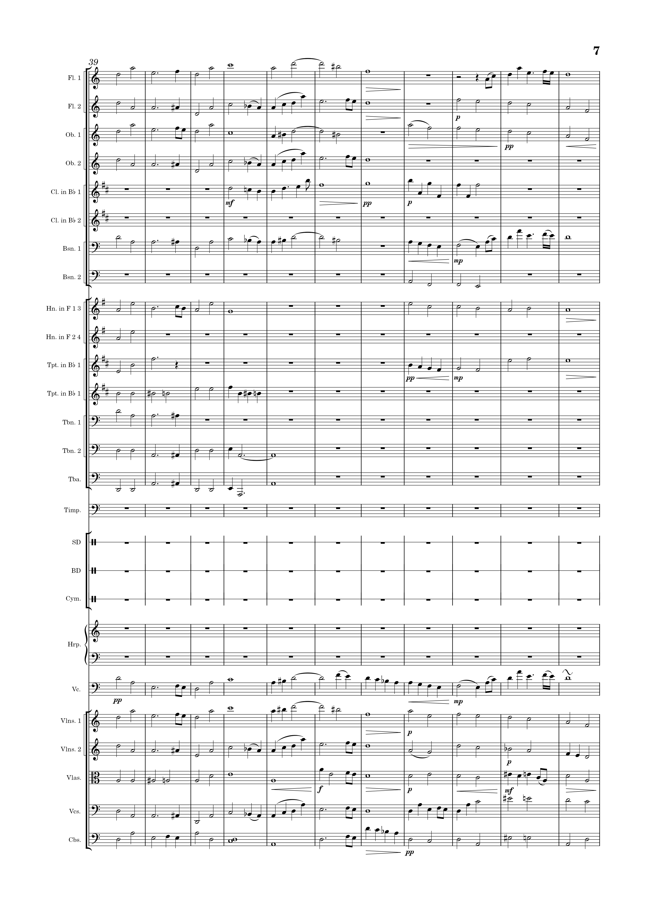
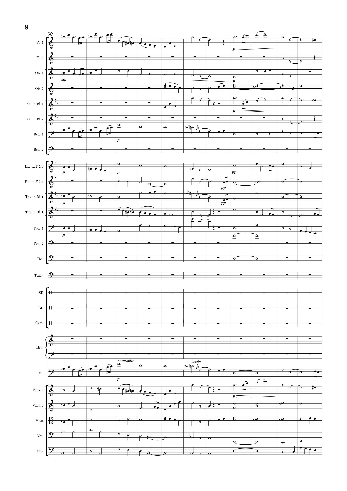
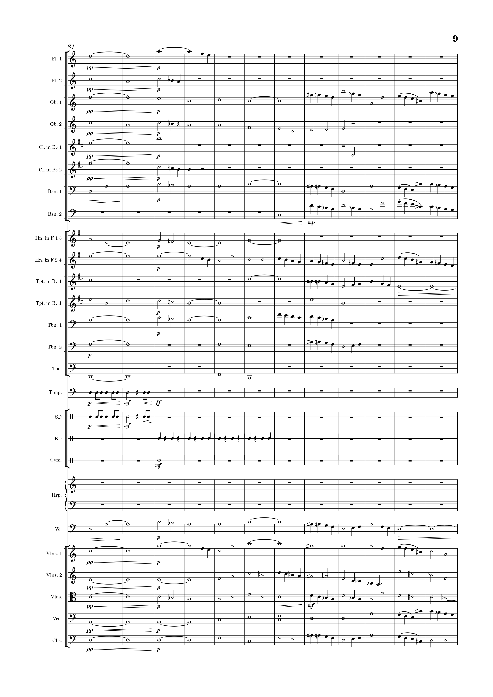
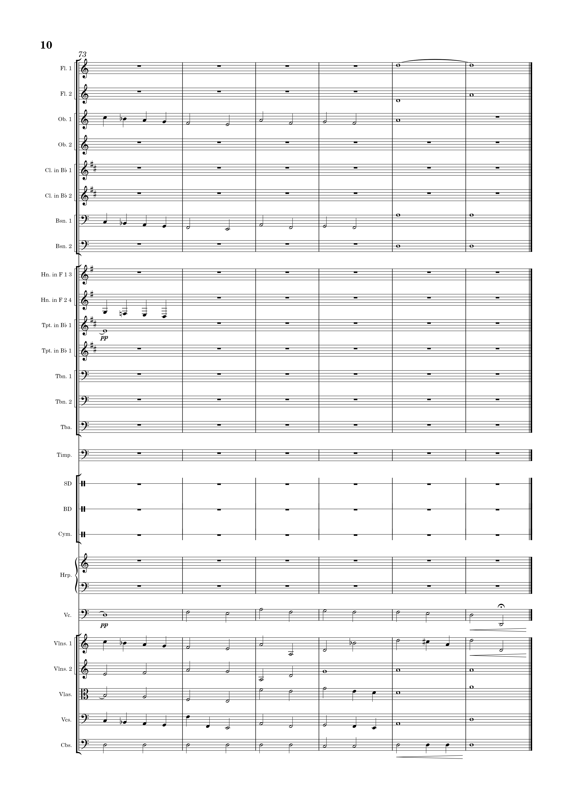
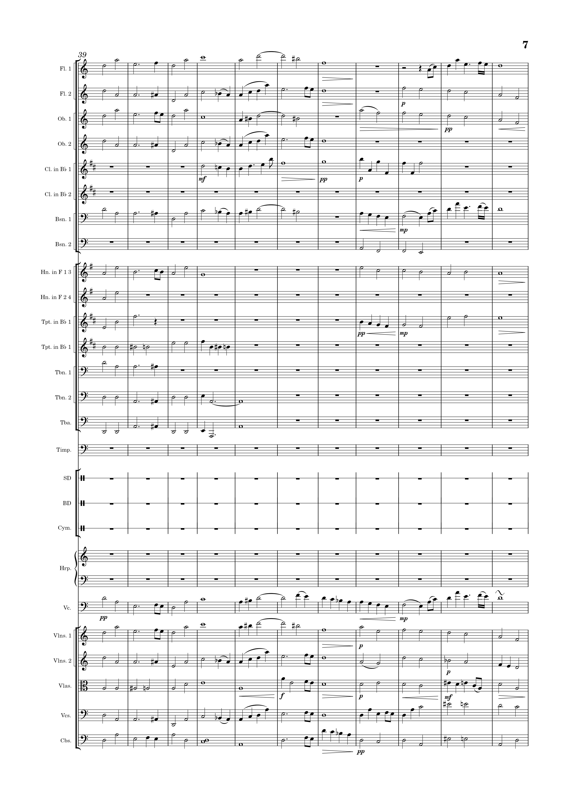
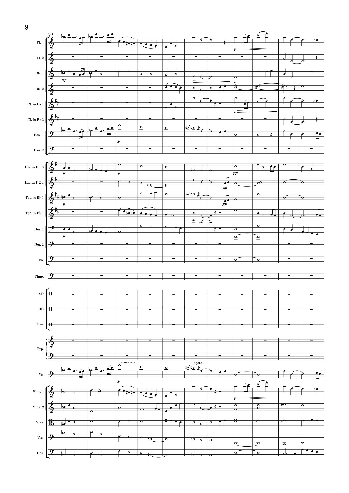
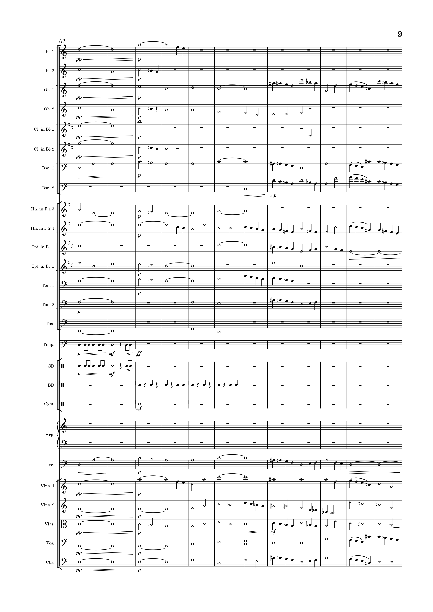
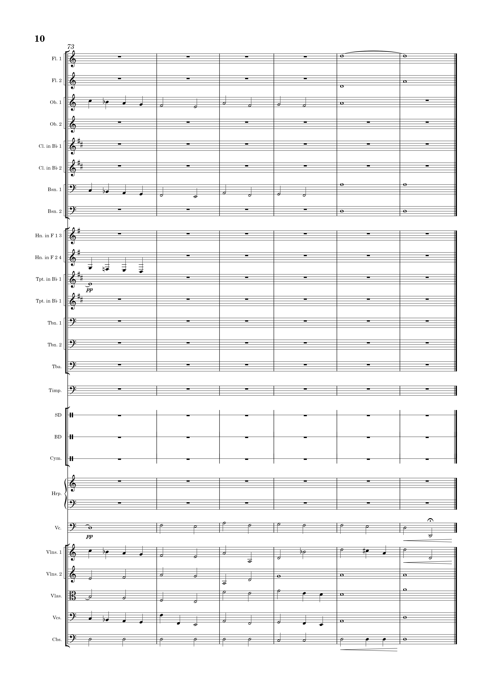

“Give every man thy ear, but few thy voice;
Take each man’s censure, but reserve thy judgment...”
About
I’m Sonetti — a multi-instrumentalist, composer, and music producer from Adelaide, South Australia.
Music is an outlet where I can semi-coherently funnel all the disjointed noise from within and make it reality. For me, writing music is a reflection of my soul and how I respond to the world around me. It’s a constantly evolving journey — sometimes flourishing, sometimes anguishing; but hey, that’s life.
Although my musical journey is just beginning, I’m grateful for the opportunity to share it with the world. Thanks for listening.
Released Media
The Ring – Sonetti (2023)
Believe – Sonetti (2023)
Epsilon – Sonetti (2023)
Pastorale
String piece that reflects a peaceful autumn day
A Memory
 







Emotional piece that explores a troubling memory